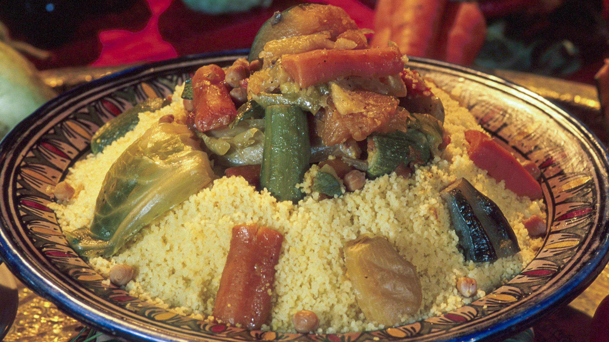

Riche en saveur et en goûts et savamment épicée, la cuisine marocaine est l’une des plus réputées au monde. La diversité de ses plats n’a d’égal que celle de ses influences: Amazigh, morisque, juive, africaine et même, asiatique ! Qu’elles soient cuisinées à l’occasion de fêtes ou aux repas de tous les jours, voici 15 spécialités marocaines qui vont réveiller vos papilles.
Probablement le plat le plus populaire avec le tajine, c’est en tout cas celui qui vient en premier à l’esprit lorsque l’on évoque la gastronomie marocaine. Traditionnellement servi le vendredi midi, après la prière de dhuhr, on le déguste aujourd’hui indifféremment tous les jours de la semaine. D’origine Amazigh, la version traditionnelle se compose de bœuf et de mouton, parfois de poulet, d’une multitude de légumes et légumineuses (courgettes, navets, fèves, lentilles, pois) et bien sûr, de semoule de blé. Les marocains le dégustent à même le plat, ou le servent dans des assiettes individuelles.

Troisième grande spécialité marocaine, la pastilla est originaire de Fès. La version traditionnelle est faite à base de pigeon, mais on trouve là encore plusieurs variantes. Servie lors des fêtes et des réceptions, elle peut être sucrée ou salée, cette dernière version étant la plus courante. Il s’agit d’un gâteau de pâte feuilleté, fabriqué à l’aide de feuilles de brick et farci d’un hachis de pigeon ou de poulet, avant d’être saupoudré de sucre et de cannelle. On trouve également des pastillas aux poissons, d’autres aux fruits de mer tandis que la Johara, la pastilla de Fès, est une préparation sucrée où les feuilles de brick sont fourrées d’une crème au lait et à la fécule de maïs.